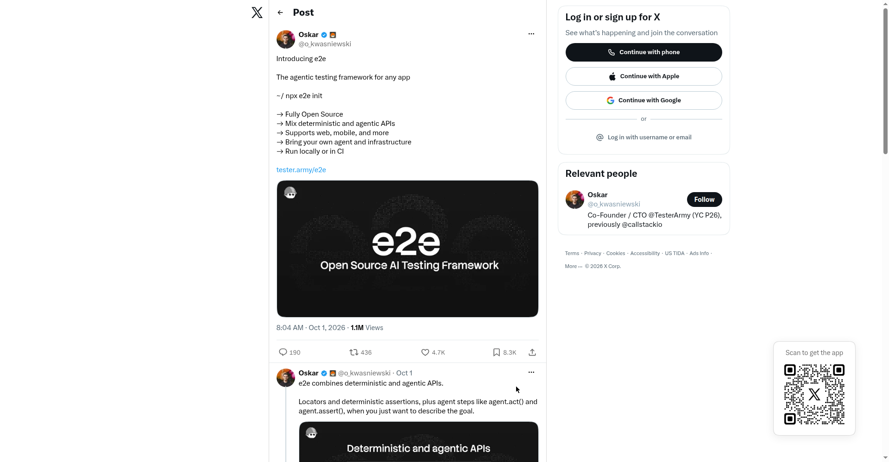

hindsight
Agent memory that learns — memory infrastructure with integrations for 25+ agent frameworks (LangGraph, Claude Agent SDK, CrewAI, OpenAI Agents). #1 on GitHub weekly trending (+16K stars this week, 44.8K total). Apache-2.0, Docker-first (surrealdb + qdrant + redis).
The innovative part: Recall runs four retrieval strategies in parallel (semantic, keyword BM25, graph, temporal), merges them with reciprocal rank fusion, and reranks with a cross-encoder. Separately, a background consolidation turns retained facts into 'observations' — deduplicated, evidence-backed beliefs that are refined rather than overwritten when new evidence arrives — and then into 'mental models' (standing synthesized answers) and knowledge pages. Memories live in isolated 'banks' with tag scoping, and 'Memory Defense' scans retains for secrets/PII. The twist isn't memory itself — it's refine-don't-overwrite consolidation plus 4-strategy fused recall.
Hackathon angle: Memory is the obvious moat layer — build a scoped-down version (e.g. memory for one vertical like coding agents) or a novel retrieval strategy on top.
Original post →
e2e
The agentic testing framework for any app (YC P26 TesterArmy, launched Oct 1, 2026, 1.1M views). rauchg: 'The future is verification-engineering. Some tests will be written by hand, most will be generated by AI and executed on real browsers.'
The innovative part: One framework that mixes deterministic and agentic APIs in the same test — use locators and deterministic assertions where stable, drop in agent steps like agent.act()/agent.assert() for flows you'd otherwise hand-describe; works across web and mobile with the same API. BYO agent/infra: any model via Vercel AI Gateway, or sign in with ChatGPT/GitHub Copilot/SuperGrok subscription. Fully open source, npx e2e init, runs locally or in CI. Novelty is the hybrid deterministic+agentic testing contract rather than pure-agent E2E.
Hackathon angle: Testing that writes itself — agent watches your app, generates tests from a prompt, self-heals flaky selectors.
Original post →
